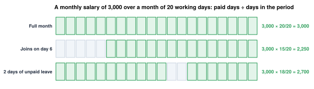
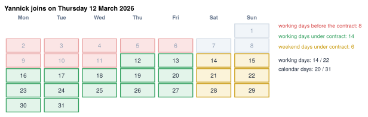
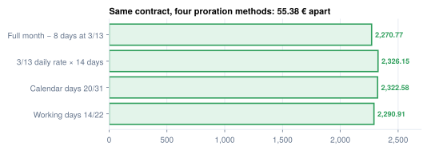

Time, proration and overtime
Partial months, absences, and what an hour is worth
- Prorate a monthly salary with the common methods and explain why they differ
- Compute a mid-month joiner's first payslip, and test thresholds on a full-month equivalent
- Classify absences as paid by the employer, paid by a fund, or unpaid
- Compute an hourly rate and an overtime premium
- Describe how Odoo turns time into payslip lines
Yannick joins MyVidangeCompany on Thursday 12 March 2026 at 3,600.00 € a month. How much does he earn for March? Four payroll teams, four answers: 2,270.77 €, 2,290.91 €, 2,322.58 € or 2,326.15 €. All four are defensible. This chapter is about choosing a denominator, and about everything else that turns time into money.
What proration is
A monthly salary pays for a full month. When the employee is paid for only part of it (he joins or leaves mid-month, or takes unpaid days), the payroll pays the same share of the salary. That is proration (pro rata, prorating, partial-period pay):
The paid time is the part of the period the employer pays for: days worked, plus paid days off such as public holidays or paid leave.
Three things follow from that definition:
- Time only matters when the month is incomplete. A monthly employee gets the same salary every full month, whatever the number of days in it.
- The denominator is a choice. Working days, calendar days, a fixed 30 days: each gives a different amount for the same absence.
- Every absence needs an answer to "who pays?" A paid day stays in the paid time; an unpaid day leaves it, and a day paid by a fund leaves the payslip too.

Time: the inputs
Three inputs decide how time becomes money:
- The work schedule: hours per day, days per week. The cast works 38 hours, Monday to Friday (
UNVERIFIEDas the sector's working time). - Public holidays: paid days off. Belgium has ten.2
- The pay basis: monthly, or hourly and daily, where every hour or day worked is paid.
Proration: the denominator is a policy

| Method | Formula | Yannick, March 2026 |
|---|---|---|
| Working days | 3,600.00 × 14 / 22 | 2,290.91 |
| Calendar days | 3,600.00 × 20 / 31 | 2,322.58 |
| Fixed daily rate × days worked | 3,600.00 × 3/13 ÷ 5 × 14 | 2,326.15 |
| Full month − missing days at a fixed daily rate | 3,600.00 − 3,600.00 × 3/13 ÷ 5 × 8 | 2,270.77 |

The "fixed daily rate" is a Belgian convention: a week is worth monthly × 3/13 (a quarter has 3 months and 13 weeks), a day a fifth of that.3 Other countries use a 30-day month, 30.4 days, or a 12-month average.
Key idea
Proration is a ratio, and the denominator is a policy. Belgian law sets no method for a monthly employee's incomplete month (UNVERIFIED: practice, not law). Choose one, write it down, and use it for joiners, leavers and unpaid days alike.
Around the world
- Saudi Arabia: real calendar days or a fixed 30-day month.
- Switzerland: a company option for the 30-day method.
- Mexico: 30.4 days per month for tax.
- Hong Kong: leave pay uses the average daily wage of the last 12 months.
- Philippines: a daily wage on the contract, converted between pay frequencies.
Case study: Yannick, a mid-month joiner
Worked example: Yannick, March 2026 (working-days method)
| Line | Amount (€) |
|---|---|
| SALARY Gross 3,600.00 × 14/22 | 2,290.91 |
| ONSS Employee contributions 13.07 % | −299.42 |
| Low-wage reduction (reference wage 3,600.08, above the ceiling) | 0.00 |
| GROSS Taxable base | 1,991.49 |
| P.P Withholding (January formula) | −163.37 |
| M.ONSS Special contribution (quarter base too low) | 0.00 |
| NET Net pay | 1,828.12 |
| Employer contributions (Q1 rate 25.13 %) | 575.71 |
| Employer cost | 2,866.62 |
A partial month sets a second trap: Yannick's 2,290.91 € looks like a low wage. Compare it with the low-wage threshold and every joiner gets a reduction. Scale back to a full-month equivalent first: (2,290.91 / 14) × 22 = 3,600.08 €, above the 3,336.98 € ceiling. No reduction.4
In Odoo. Yannick's March payslip uses the fourth method: 2,270.77 € gross and 1,818.11 € net. Neither is wrong; the method is a policy to confirm with the customer (Chapter 10).6
Absences: who pays?
The payroll question is not "is he absent?" but "who pays for this day?"
flowchart TB
A["A day not worked"] --> E["Paid by the employer<br/>holiday, public holiday,<br/>first days of sickness"]
A --> F["Paid by a fund<br/>long sickness, maternity,<br/>temporary unemployment"]
A --> U["Unpaid<br/>unpaid leave, unjustified absence"]
E --> G1["Gross unchanged"]
F --> G2["Gross reduced;<br/>the fund pays the employee"]
U --> G3["Gross reduced"]
classDef earn fill:#E3F4EA,stroke:#2E9E5B,stroke-width:2px,color:#1E293B;
classDef ded fill:#FBE5E5,stroke:#D64545,stroke-width:2px,color:#1E293B;
classDef emp fill:#EEE8F6,stroke:#7B5EA7,stroke-width:2px,color:#1E293B;
classDef tax fill:#E2ECF8,stroke:#2F6DB5,stroke-width:2px,color:#1E293B;
classDef net fill:#FBF3D9,stroke:#C99A0E,stroke-width:2px,color:#1E293B;
classDef odoo fill:#E9EDF2,stroke:#475569,stroke-width:2px,color:#1E293B;
classDef law fill:#FDF0E1,stroke:#B45309,stroke-width:2px,color:#1E293B;
classDef neutral fill:#F4F6F8,stroke:#64748B,stroke-width:2px,color:#1E293B;
class A neutral;
class E,G1 earn;
class F law;
class U,G2,G3 ded;An unpaid day is a proration in the other direction. Jurgen takes one unpaid day in October 2026.
| Jurgen, October 2026, 1 unpaid day | Amount (€) |
|---|---|
| Daily rate 2,300.00 × 3/13 ÷ 5 | 106.15 |
| Gross, 2,300.00 − one day | 2,193.85 |
| Employee contributions after the low-wage reduction | −2.19 |
| P.P Withholding | −105.95 |
| M.ONSS Special contribution | −10.37 |
| NET Net pay | 2,075.34 |
His usual net is 2,143.05 €. The unpaid day also scales his low-wage reduction by 21/22.4
A sick day is usually paid by the employer for a first period, then by a fund. In Belgium a white-collar employee keeps his full salary for the first 30 days (the "guaranteed salary").3 If Jurgen is ill for a day, his gross stays 2,300.00 €; only the day's type changes, and with it per-day benefits such as meal vouchers.
Common pitfall
Mixing methods gives two values of "a day" in one company: Jurgen's day is worth 104.55 € by working days and 106.15 € at the fixed rate.5 Pick one and use it everywhere.
Overtime
Overtime is time above a daily or weekly limit, paid at a premium and often taxed specially.
The hourly rate is again a convention; in Belgium, monthly × 3 / 13 / weekly hours. Belgian law sets a premium of at least 50 % (100 % on Sundays and holidays).1
Worked example: Jurgen, 4 hours at 150 %
| Line | Amount (€) |
|---|---|
| Hourly rate 2,300.00 × 3 / 13 / 38 | 13.97 |
| Overtime 4 h × 13.97 × 150 % | 83.82 |
The hourly-rate convention is common practice, UNVERIFIED as a legal rule.5 Odoo pays 83.81 €: it does not round the hourly rate first.6
Around the world
- Switzerland: 125 %, 150 % or 200 %.
- Morocco: 25 %, 50 % or 100 %.
- United States: 150 % as a work entry; a federal deduction for overtime, capped year to date.
- UAE: weekday and rest-day overtime, each at its work-entry rate.
- Kenya, Netherlands, India: no overtime rule in the module.
In Belgium
Some overtime hours are free of contributions or carry a tax reduction, but only up to a yearly number of hours.7,8 The same four hours can be treated three ways, so the payroll needs an hour counter per employee and year.
How time reaches the payslip
Every payroll system, Odoo included, turns time into money in four moves. Illustrative month: 3,000 a month, 20 working days, of which 17 worked, a public holiday, a sick day paid by the employer and an unpaid day.
The public holidays.
The approved time off.
2,850contributions and tax are then computed on it
In Odoo. Work entries are generated from the employee's version (hr.version), its calendar and the time off, then summed into hr.payslip.worked_days lines, one per work entry type; the type says whether the day is paid. The localization decides how a line becomes money: Belgium values non-attendance lines at the 3/13 rate and gives the attendance line the rest, so a full month always pays the full salary. Chapter 14 walks through it in Odoo.
In practice
Before configuring, write the time policy on one page: proration method, daily and hourly rates, who pays each absence, how overtime is counted. Have the customer's accountant confirm it. Most disputes about joiners and leavers are disputes about this page.
Summary
- A monthly employee earns the same salary every full month; time matters for joiners, leavers, absences and overtime.
- Proration's denominator is a policy: Yannick's March is 2,270.77 € to 2,326.15 € depending on the method.
- Thresholds tested on monthly pay must use a full-month equivalent, or every joiner looks like a low earner.
- Every absence is paid by the employer, paid by a fund, or unpaid. An unpaid day lowers Jurgen's net from 2,143.05 € to 2,075.34 €; a short sick day leaves his gross unchanged.
- Overtime = hours × hourly rate × (1 + premium); the hourly rate is also a convention.
- In Odoo, time becomes worked-days lines per work entry type; the localization decides how they become money.
-
Labour Law of 16 March 1971, art. 19, 26bis, 29 (Justel): https://www.ejustice.just.fgov.be/cgi_loi/article.pl?language=fr&lg_txt=f&type=&sort=&numac_search=1971031602&cn_search=1971031602&caller=&&view_numac=1971031602fr. ↩
-
SPF Emploi, public holidays: https://emploi.belgique.be/fr/themes/jours-feries-et-conges/jours-feries. ↩
-
Law of 3 July 1978 on employment contracts, art. 39 §1 (3/13) and art. 70 (guaranteed salary) (Justel): https://www.ejustice.just.fgov.be/cgi_loi/article.pl?language=fr&lg_txt=f&type=&sort=&numac_search=1978070303&cn_search=1978070303&caller=&&view_numac=1978070303fr. ↩↩
-
ONSS, work bonus (incomplete months, S = (W / J) × D, P = R × J / D): https://www.socialsecurity.be/employer/instructions/dmfa/fr/latest/instructions/deductions/workers_reductions/workbonus.html. ↩↩
-
Independent calculator,
research/numbers_be_calc.md, sections 4 and 10.8 to 10.11. ↩↩ -
Payslips computed by Odoo master on the demo database,
research/numbers_be.md, sections 2 (Yannick, March 2026) and 3 (Jurgen, April and May 2026). ↩↩ -
ONSS, voluntary overtime (law of 18 May 2026, AR of 9 July 2026): https://www.socialsecurity.be/employer/instructions/dmfa/fr/latest/instructions/salary/salary_exclusions/voluntary_overtime.html. ↩
-
SPF Finances, Annex III consolidated, n° 45 (overtime reduction): https://www.minfin.fgov.be/myminfin-web/pages/public/fisconet/document/0c174ec5-448b-4d1e-983b-fc457e5e7e28. ↩